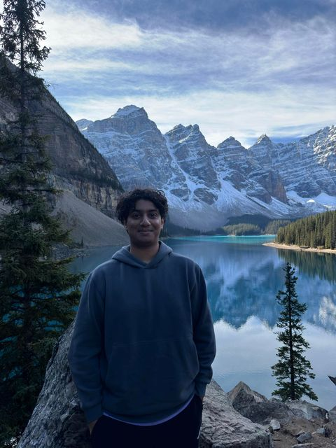

I'm a 5th-year BTM student at Toronto Metropolitan University,
where I've honed my skills at the intersection of business and technology.
Through the co-op program, I’ve applied my knowledge in real-world scenarios, solving business challenges
using technology-driven solutions.
I'm passionate about leveraging tech to optimize business processes and drive
impactful change.

Education
2020 - 2025
Toronto Metropolitan University (formerly
Ryerson University)
Business Technology Management Co-op (B.Comm)
Key Courses: Systems Analysis and Design, Data and Information
Management, IT Infrastructure, Information Systems Security and Privacy, Enterprise Architecture, Business
Intelligence and Analytics, Cloud Computing
Bootcamps Completed: Power of Excel, Business Fundamentals
2016 - 2020
Oakville Trafalgar High School
Ontario Secondary School Diploma (OSSD)
Achievements: Honor Roll
Relevant Courses: Computer Science, Mathematics, Business Studies
Experience
Jan 2024 - Aug 2024
Financial Analyst (Co-op) - Siemens
Energy
Collaborated with the finance team to manage sales orders, goods receipts, and invoices using SAP
Relevant Skills: Financial Analysis, SAP, Data Entry
May 2023 - Aug 2023
Financial Analyst (Co-op) - Siemens Gamesa
Renewable Energy S.A
Developed financial reports and analyses utilizing Excel tools, and ensured accuracy in purchase orders
through detailed data management
Relevant Skills: Financial reporting and analysis, EXCEL(VLOOKUP, Pivot Tables)